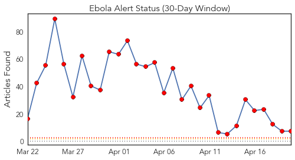
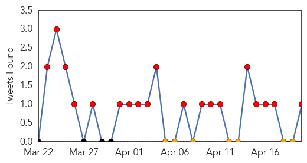
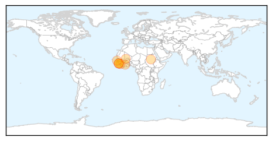
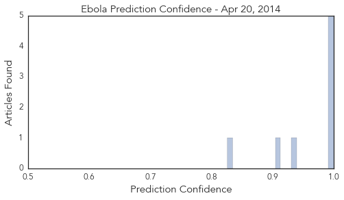

Toggle navigation
Early Warning
Daily Alerts
Ebola
Apr 20, 2014
30 Day Trends
Web: 30
alerts
, 0
warnings
Twitter: 19
alerts
, 0
warnings
Top Articles:
1.000
Ebola Virus Claims 61 Lives in Guinea
1.000
West African Ebola outbreak caused by new strain of disease: study
1.000
Ebola has killed 61 in Guinea since January
0.994
West Africa’s Ebola outbreak prompts changes in I Coast cuisine
0.992
Death toll from Guinea Ebola outbreak rises to 122
0.935
Ebola outbreak: 61 persons dead, 23 hospitalised in Guinea
0.913
Cote d'Ivoire: West Africa's Ebola outbreak prompts changes in I.Coast cuisine
0.826
Guinea: 61 Persons Dead, 23 Hospitalised With Ebola
Top Tweets:
0.835
see what health workers in guinea are doing to contain the "most challenging" ebola outbreak sgmd 730et http://t.co/IJsempnde3
Web/News Articles

Tweets

Article Locations

Article Confidences
